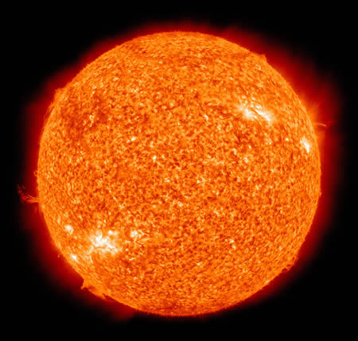

太阳或日是位于太阳系中心的恒星，它几乎是热等离子体与磁场交织著的一个理想球体。其直径大约是1,392,000（1.392×106）公里，相当于地球直径的109倍；质量大约是2×1030千克（地球的333,000倍），约占太阳系总质量的99.86%，同时也是27,173,913.04347826（约2697.3万）倍的月球质量。 从化学组成来看，太阳质量的大约四分之三是氢，剩下的几乎都是氦，包括氧、碳、氖、铁和其他的重元素质量少于2%。